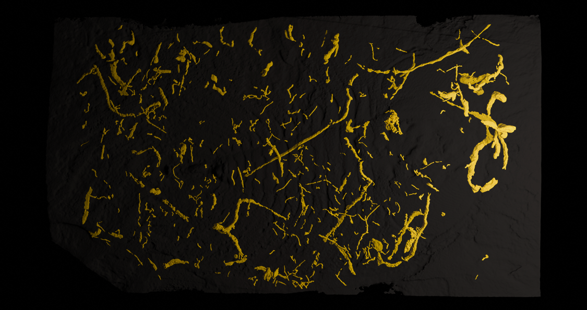
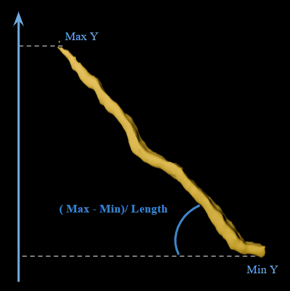
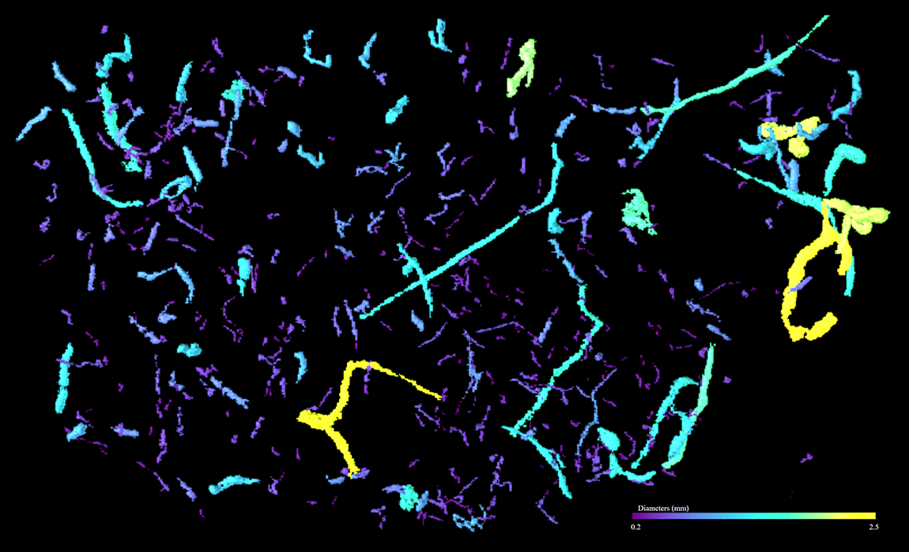

Three-dimensional analysis of trace fossils

Overview
This project focuses on the spatial analysis of three-dimensional datasets of trace fossils. These fossils were identified using CT scans of slabs from the Cambrian Rosella Formation, allowing them to be reconstructed in 3D. Spatial data were combined with quantitative analyses to study their shape and distribution at the community scale.
Methods
The slabs were CT scanned, and each trace fossil was individually segmented using Dragonfly software. Their morphology and spatial arrangement were then analysed using parameters such as size, orientation, position, clustering, and width, in a reproducible way. In total, around 4,000 traces were reconstructed and analysed across 40 fossil slabs.
Orientation is measured as the angle relative to the sedimentary layer

Results
The results provide evidence for the presence of endobenthic organisms within these assemblages. This large-scale analysis offers valuable insights into community composition and functioning, as well as the processes involved in fossil preservation. Applying this approach to other assemblages would allow meaningful comparisons of ancient ecosystems and their preservation.
